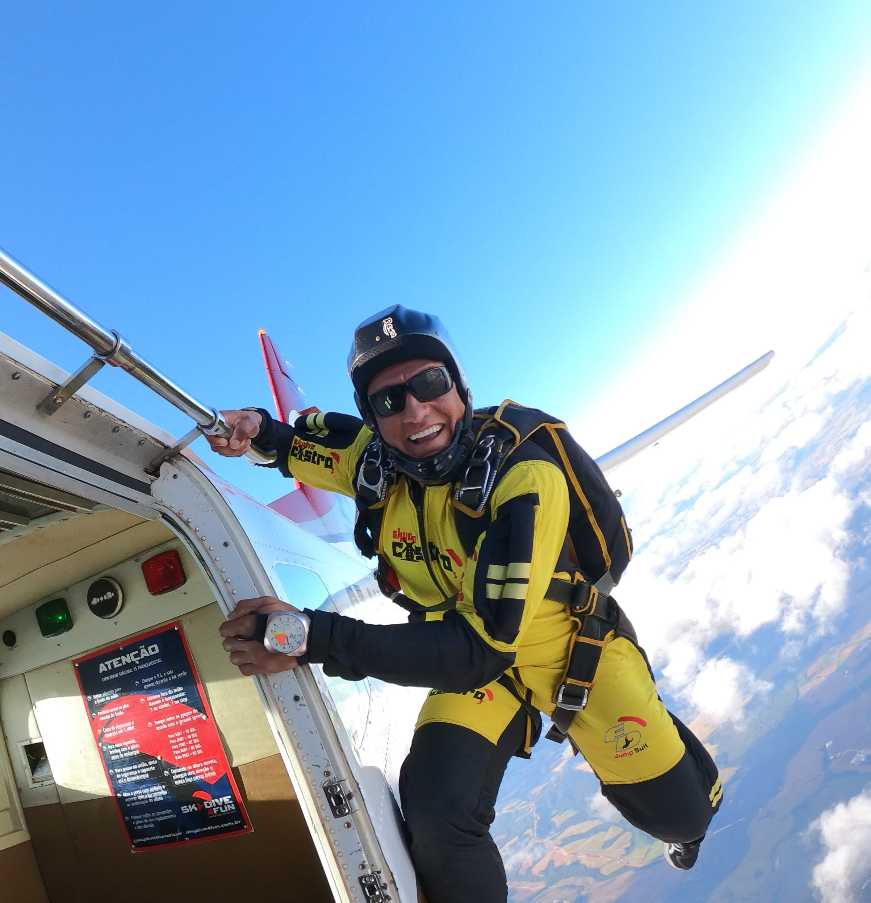
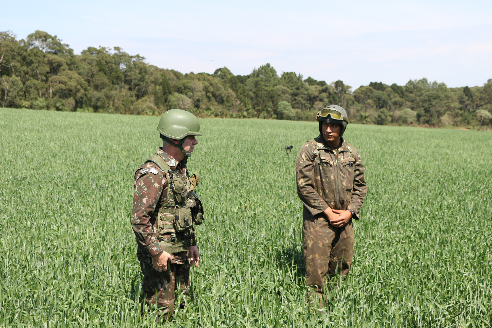

Curso Superior
Análise e Desenvolvimento de Sistemas — UNINTER.
Estudante de Análise e Desenvolvimento de Sistemas, com experiência em liderança, logística e gestão, em transição para a área de tecnologia e desenvolvimento web.
Entrar em contato
Meu nome é Carlos Eduardo Siqueira Miranda, sou de Lapa-PR e atualmente curso Análise e Desenvolvimento de Sistemas pela UNINTER.
Tenho 8 anos de experiência no Exército Brasileiro, onde desenvolvi habilidades importantes como liderança, disciplina, responsabilidade, organização e atuação em atividades ligadas à logística. Essa vivência contribuiu bastante para minha formação pessoal e profissional.
Nos últimos anos, comecei a direcionar meus estudos e objetivos profissionais para a área de tecnologia, buscando aprender mais sobre programação, desenvolvimento web e criação de soluções digitais.
Além disso, há menos de um ano também venho atuando com gestão de academia/CrossFit, experiência que tem me proporcionado contato com atendimento ao público, organização de processos e administração de um negócio.

Análise e Desenvolvimento de Sistemas — UNINTER.
Estudos em HTML, CSS, JavaScript, lógica de programação, banco de dados e fundamentos de desenvolvimento de sistemas.
8 anos de experiência no Exército Brasileiro, com atuação em liderança, organização, logística e trabalho em equipe.
Inglês: conhecimento intermediário.
Nesta seção apresento alguns trabalhos acadêmicos desenvolvidos durante minha formação em Análise e Desenvolvimento de Sistemas. Os projetos representam minha evolução nos estudos de desenvolvimento web, banco de dados e lógica de programação.
Site desenvolvido para a disciplina de Fundamentos da Programação Web, utilizando HTML5, CSS3 e JavaScript. O projeto possui seções de apresentação, formação, portfólio e contato.
Ver projetoTrabalho acadêmico envolvendo modelagem MER, criação de banco de dados, tabelas, chaves primárias, chaves estrangeiras e consultas SQL.
Ver trabalhoProjeto acadêmico desenvolvido em Python, com arquivos organizados por classes como Game, Player, Enemy, Level e Menu. Também foi elaborado um diagrama de classes para representar a estrutura do sistema.
Ver projetoEntre em contato comigo preenchendo o formulário abaixo.